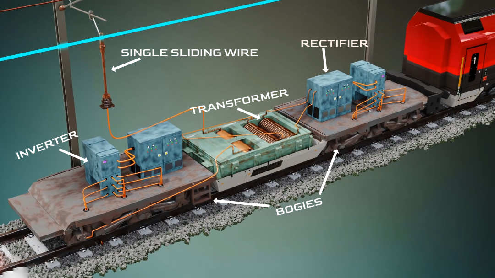

It might be surprising to know that in electric trains, the power collected from the overhead lines ends up in the grounding cable of the track after flowing through the wheels. Three phase power conversion, regenerative braking and zig-zag overheadlines - all these make electric train technology quite unique. Let’s understand all the engineering behind the electric trains. Let me start from the simplest possible design.
Design 1: A basic of electric train
The simplest version of an electric train is shown in fig 1a. Here, a single sliding wire collects electric power from the overhead lines. This power is fed to a single-phase induction motor. The induction motor's rotor is connected with the wheels. To complete circuit, the induction motor's other terminal is grounded. This grounding connection is possible because the wire is first connected to the wheels through an axle brush. The wheel is always in contact with the track, and the track is grounded. The current from the OHL( overhead line) flows to the ground. It first passes through the induction motor, then the axle brushes, then the wheels, and finally to the track and ground (refer fig 1a). When the current passes through, the induction motor's rotor spins, along with the wheels. However, a spinning wheel will move forward, which means the next grounding circuit should be available at a very short distance from the previous one.
Details of axle brush
Now, let’s look at some axle brush details. The axle brushes are fitted to the rotating wheel, and the current is transferred to the wheels through these carbon brushes, which slip over the disk attached to the wheel axle (refer fig 1b). This is the simplest version of an electric train.
Design 2 : why do we need a transformer in electric train?
Let’s improve this design and make our train more functional. The voltage used in the overhead line is 25 kilo Volt, which is a huge voltage, right?. Motors require much less voltage to run. For this reason, we need to feed it to a step down transformer, which transforms the voltage to the desired level (refer fig 2a). The power supply from the overhead Line initially passes through the transformer's primary, and here, the circuit is completed due to the grounding. Because of the transformer's action, the current will be induced in the secondary winding and reduced voltage power is fed to the motor.
Design 3: Why do we need a 3 phase induction motor in electric trains?
For high traction like the train, the motor should supply a high torque. Moreover, the torque curve should be uniform, even if the motor speed varies. Three-phase induction motors are the perfect choice to achieve high, uniform torque requirements. Stretching three-phase wire to power this motor is not a good idea, as it’s highly uneconomical. That’s why a rectifier and inverter is used to convert the single-phase supply to the three-phase supply. A rectifier converts the single-phase AC power into DC power, and then the inverter converts the DC power into three-phase AC power(refer fig 2b).
Now this engine is ready to run over the track. We can increase the torque output further if we add a transmission system (refer fig 2c) with some gear ratio between the motor shaft and the wheel axle. At this point, the engine we just made seems perfect.
Design 4: a complete electric locomotive engine
So far we've developed a single motor engine that can run on the track but if we want to make a complete train by connecting several coaches to this engine, it becomes quite clear that the single motor engine we developed doesn't have sufficient power to pull all these coaches. So let’s add some more motor-wheel pairs to make the engine more powerful. An engine bogie is constructed with three three-phase induction motors, obviously to drive three pairs of wheels. Did you know that in an engine, generally two such engine bogies are used. In this complete engine you can see in fig 3, how the transformer and rectifiers are positioned.
Why is a pantograph used on a train?
So far we have got an idea how we can transfer power to the train using a single hanging wire. However, this method is not practical. Sometimes it is not possible to keep the distance between the train and overhead line the same, which means for proper power collection, a height-varying mechanism should be used. Pantographs accomplish this task. A modern pantograph is shown in fig 4a. Modern pantographs work on a pneumatic mechanism. Based on the pressure of a pneumatic system, the pantograph can adjust its height. During height adjustment, the current-collector remains always horizontal due to a four bar linkage mechanism. The current-collector has to be perfectly horizontal; otherwise, power transmission will be in trouble. If for some reason the pantograph loses its connection with the wire, the train will continue its free run for a few kilometres due to its high momentum. For more details of the pantograph, please read our detailed article.
Why does the overhead line zig-zag?
Have you ever wondered why the overhead line stretches in a zig-zag manner? (refer fig 4b). This arrangement ensures that the pantograph's collector head doesn't touch the overhead wire at a constant point of contact. Due to this arrangement, the wear and tear is minimised.
How do electric trains control speed?
1. What is a regenerative braking system?
The most important aspect for the train, after acceleration, is how to stop the train? Should we directly turn off the induction motors? If so, the train will keep on running over the tracks for several kilometres until it comes to a dead stop. Another idea is that we could apply electrical braking. In a normal induction motor the rotor speed is lower than the speed of RMF. However, by lowering the supply frequency we can reverse this condition. Interestingly when RMF speed is lower than the rotor speed, the direction of induced current in the rotor bars reverses(refer fig 5a). This makes the induced torque on the rotor in the opposite direction. This is a perfect brake - a brake without metal to metal contact. During this phase the motor runs at generating mode.
2. What is pneumatic braking system?
Regenerative braking method can't stop the train dead in its tracks. Because it doesn't work at low speed. Which means it can slow the train down, but after that you have to apply the pneumatic brakes to stop the train completely (refer fig 5b). This is a different kind of mechanical brake. Here the spring force and compressed air forces are acting on the piston in the opposite directions. The interesting thing is that when the driver releases the air from the cylinder, the stretched spring pulls the piston towards the wheel and the brake gets applied. This brake system also provides security in the case of air leakage or broken compressor. The brake gets applied automatically as pressure releases. The pneumatic braking system is fitted under every coach for each wheel pair.
How do train coaches get power?
1. Self generation
Let’s explore how the power is supplied to each of the coaches. One way to supply the power supply for each coach's utilities is by self-generation. An alternator is mounted under the coach frame and driven by a cardan shaft, which is driven by a gearbox mounted on the axle(refer fig 6a). Output is rectified and charges a 110V DC battery, creating a continuous power supply to coaches.
2. Head on generation
For power supply to the entire train, the self-generating method is not efficient, as it produces very fluctuating output power. So the most common way to supply power to the coaches is head-on-generation. In this method, an extra winding is added up in the locomotive transformer, which supplies the power to all the coaches(refer fig 6b).
I hope you have learned how the electric train works and acquired some extra details of electric trains.
Thanks for reading!